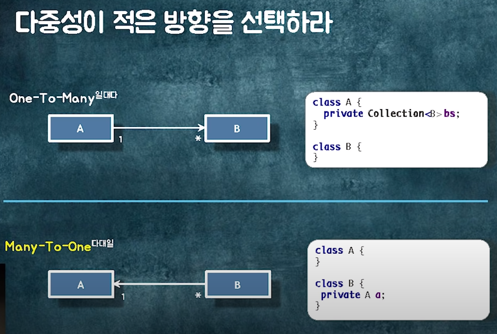

우아한 객체지향 강의 (by 우형) 정리
2022, Aug 18
강의
[우아한테크세미나] 190620 우아한객체지향 by 우아한형제들 개발실장 조영호님
Github
https://github.com/eternity-oop
수강후기
- 전체적으로 제품이 하려는 방향과 일치해서 이해하기 어렵지 않았다.
- 협력관계에 대해, 객체에 대해 좀더 정리해 볼 수 있는 시간으로 유익한 강의!
강의 요약
클래스 의존성의 종류
- Association 연관관계 = 탐색가능성(navigability)
- A클래스에서 B클래스로 영구적으로 갈 수 있는 통로(영구적인 탐색 구조). 영구적으로 유지가 되어야 한다는 판단근거가 있어야 한다.
- 두 객체 사이에 협력이 필요하고 두 객체의 관계가 영구적이라면, 연관 관계를 이용해 탐색 경로 구현
- ex) Order가 뭔지 알면, Order를 통해 원하는 OrderLineItem을 찾을 수 있다
- 방법
- 객체 참조를 이용한 연관관계 구현
- Dependency 의존관계 - 일시적으로 협력을 요하는 시점에 관계를 맺는것(파라미터, 리턴타입, 지역변수)
- Inheritance 상속관계 - extends
- Realization 실체화 관계 - implement
설계할 때 기본적 의존성 법칙
- 양방향 의존성을 피하라
- 다중성이 적은 방향을 선택하라
- one to many 보다 many to one으로

- 의존성이 필요없다면 제거하라
- Uni-Directional : 패키지 사이의 의존성 사이클을 제거하라
협력 설계하기
- 요구사항 정리 → 클래스 다이어그램 표현
- 관계에는 방향성이 필요
- 어떤 객체가 다른 객체와 어떤 의존성을 갖는지 정적인 코드로 표현이 되어야 한다
- 관계의 방향 = 협력의 방향 = 의존성의 방향
- 객체는 방향성이 필요하다 : 어떤 객체가 어떤 객체에 의존성을 갖는지
- 런타임의 객체들이 어떻게 협력하는 가가 중요하다.
- 관계의 종류 결정하기
- 연관/의존/상속/실체화 관계 중
- 연관관계 : 협력을 위해 필요한 영구적인 탐색 구조를 잡아야 할 때. 실질적으로 데이터의 흐름에 따라가게 된다. 어떤 객체에서 어떤 객체로 빈번하게 호출해야할 때 영구적으로 잡는 것
- 의존 관계 : 협력을 위해 일시적으로 필요한 의존성(파라미터, 리턴타입, 지연변수)
설계 개선하기
- dependency를 그려본다.
- 협력관계가 이상하면, 잘못된 코드일 가능성이 크다
- cycle이 걸리지 않았는지 체크
- 일단 우선 절차적으로 코딩했다가 dependency를 그려보자
- 문제상황
- 객체 참조로 인한 결합도 상승
- 패키지 의존성 사이클
- 수정할 때 도메인 규칙을 함께 적용할 경계는? 즉, 객체의 상태를 변경할 때 연관된 도메인 규칙을 함께 적용해야하는 객체의 범위는? = 결국 이말은 트랜잭션 경계가 어디까지인가와 같다
- 중간객체를 통해 참조할 경우에도 트랜잭션이 하나로 묶이게 되므로 어디까지인가 경계를 정하는 것이 필요하다
- 중간객체로 묶인 도메인의 갱신 주기가 다를 수 있다. = 이러면 트랜잭션 경합이 발생해서 성능이 떨어질 수 있다.
- 객체 참조의 문제점
- 모든 객체가 연결돼 있기 때문에 어떤 객체라도 접근가능하게 되고 모두 수정이 가능하게 된다는 문제가 있다.
- 객체 참조는 결합도가 가장 높은 의존성이다
- 객체 참조를 끊어야 한다.
- 어떤 객체들을 묶고 어떤 객체들을 분리할 것인가? ( = 트랜잭션 경계 = 조회 경계)
- 함께 생성되고 함께 삭제되는 객체들을 함께 묶는다.
- 경계 안의 객체는 참조를 이용해서 접근한다.
- 경계 밖의 객체는 ID를 이용해 접근한다(=Repository를 통한 탐색)
- 왜냐하면 같이 조회되어야 하니까
- 이걸 구분하면 언제 lazyloading할지 ignoreloading할지 경계가 구분된다
- 도메인 제약 사항을 공유하는 객체들을 함께 묶어라
- 그룹은 트랜잭션/조회/비즈니스 제약의 단위가 된다
- 가능하면 분리하라
- 객체를 참조하는 로직을 일단 다른 객체로 옮겨버린다.
- 예를 들어서 validation을 체크하는 로직을 Validator객체로 생성해서 로직을 모은다. 때로는 절차지향이 객체지향보다 좋다. 객체안에 validation을 담아야한다는 것은 무조건적이지 않다.
- 함께 생성되고 함께 삭제되는 객체들을 함께 묶는다.
- 도메인 로직의 순차적 실행이 필요할 때
- 객체를 분리한 상황에서는 컴파일 에러가 발생하게 된다.
- 이 경우는
- 절차지향 객체를 생성해서 분리
- 만약 패키지에 의존성 사이클이 발생한다면
- 인터페이스를 이용해서 추상화를 넣어서 의존성을 역전시킨다. (dependency inversion principle)
- 만약 패키지에 의존성 사이클이 발생한다면
- 도메인 이벤트 퍼블리싱을 통해 협력
- 로직의 순서를 느슨하게 만들고 싶을 때 사용
- spring data Aggregate Abstraction 이용 - 동기/비동기, 트랜잭션 단위별로 사용가능
public class Order extends AbstractAggregateRoot<Order> { }
- 절차지향 객체를 생성해서 분리
- 어떤 객체들을 묶고 어떤 객체들을 분리할 것인가? ( = 트랜잭션 경계 = 조회 경계)
- 해결
- 중간 객체를 이용한 의존성 사이클 끊기
- 이것도 문제 발생
- Repository를 통한 탐색(약한 결합도)
- Jpo에 컬럼을 추가하는 것을 의미 (ex. Order Jpo에 shopId를 컬럼으로 추가)
- 중간 객체를 이용한 의존성 사이클 끊기